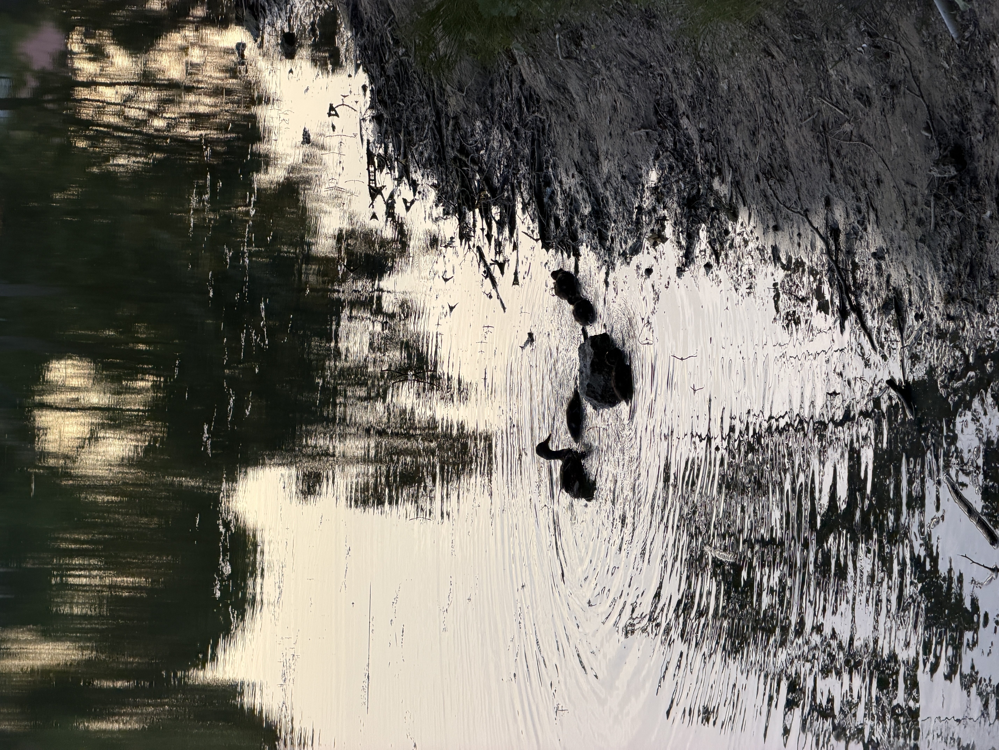
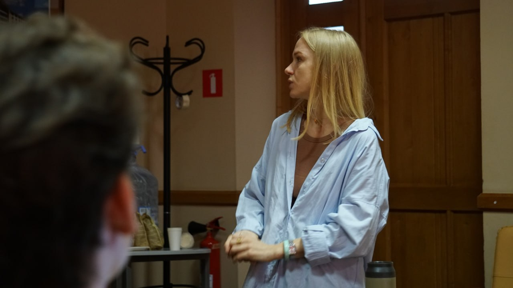
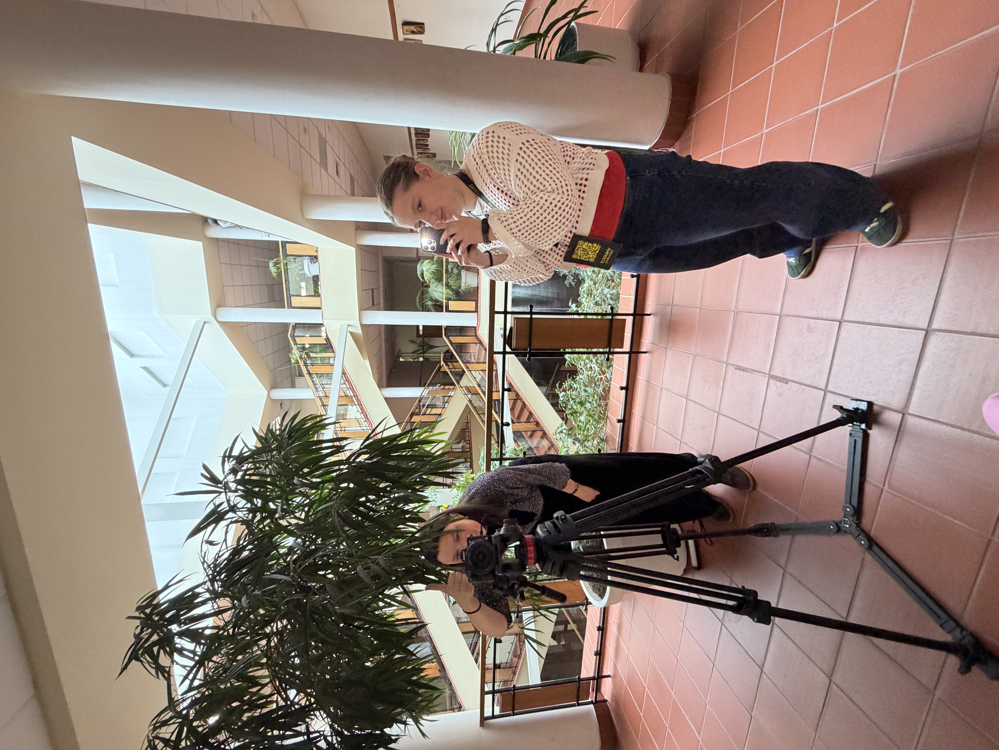
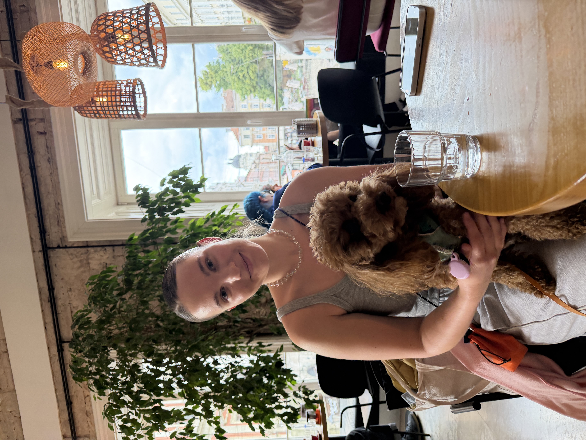
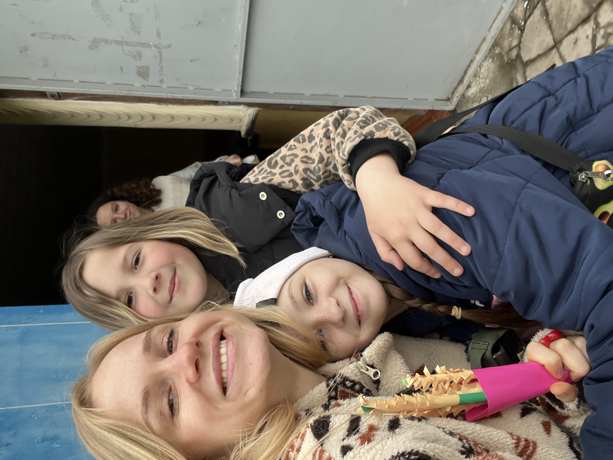
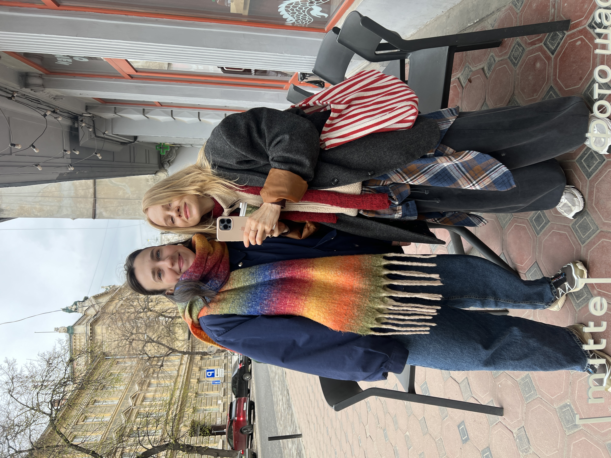

Таня Бура
Таня Бура
Червень у нашім з тобою служінні
Комунікації місії, розмови з Анною й Нікою та підготовка дитячого табору.
«Червню не до дедлайнів» — думала я, коли сиділа в парку за своїм домом. Бог подарував мені орендувати смішну стареньку жовту квартирку, зате одразу за нею — красивий парк і навіть мілке озерце, в якому купається зграя качок, а віднедавна — і жменька голопузих дітей.
Архівний лист. Події й молитовні потреби описані станом на час написання.

Червень у Львові

В мене з цього тижня вже зовсім немає навчання (хіба кілька статей треба написати, але то приємність), тому я маю розкіш спати до 9:30 і, коли вже не можу дивитись на свої жовті стіни — згрібаючи всю техніку, беру старе картате покривало і йду працювати до озера.
Офіційно можу сказати, що цьогоріч бачила більше червня, ніж усі останні роки чотири.
А червень у Львові — червонощокий, полунично-гамаковий, качкогодувальний і дуже навіть біговий.
Мені додає стільки натхнення спостереження за звичайним життям, яке Бог нам дарує знову і знову — мам з дітьми в кольорових панамах, бабусь, які вигулюють кучерявих, як і вони самі, пуделів, студентів, які трійками готуються (ми ж з вами знаємо, що ні) до сесії на траві.
Система комунікацій місії

В цілому, травень та червень видались насиченими служінням — я по трошки починаю розуміти, як вибудовувати систему комунікацій для місії.
Я вірю, що ми зможемо знайти саме тих людей, кому можемо допомогти, і тих, з ким можемо це робити — тоді, коли вміємо добре, вчасно і в потрібних каналах пояснювати, у що віримо, що ми робимо і для чого.
Ці місяці я переробляла (з дизайнеркою) лого місії, створювала комунікаційну стратегію, оновлювала разом з новою співробітницею, яка тепер у моїй команді, дизайн-систему і логіку наших соцмереж, продюсувала, планувала, інколи знімала і монтувала десятки відео та сотні фото.
Мене надихає, що це служіння може зробити видимим інші наші служіння, масштабувати їх вплив і допомогти реалізовувати нашу основну ціль — релевантне благовістя та наставництво тих, хто покаявся.
Нижче — трошки статистики за цей семестр у студентському служінні, радію бути його частиною і тому, що Бог робить!
Анна: лист із-за кордону

Також минулого року я повністю переробила сайт Кемпусу і нам відтепер туди приходять різні запити. Це студенти, які шукають спільноту, або місце, де можуть реалізувати свої таланти.
Нещодавно прийшов дуже щемкий лист від українки, Анни, яка живе за кордоном, але почувається самотньою, не розуміє, куди рухатись, і не почувається на своєму місці. В нас зав’язалась гарна переписка, то я сподіваюсь, що вийде її продовжити і, можливо, мати зум.
Ніка

Вона відтепер не хоче бути просто людиною, яка «бере», але тією, яка щедро має і ще більш щедро дає.
На днях я мала ще одну хорошу розмову з одногрупницею, Нікою.
Вона повернулась з міжнародного обміну розбитою емоційно, засмученою і розгубленою. Ніка сказала мені, що вона впевнена: у складний момент в аеропорту, коли в неї не було коштів і вона була не здатна оплатити багаж, Бог послав їй чоловіка, який все вирішив і дав змогу полетіти.
Для Ніки це був однозначно Бог, і вона відтепер не хоче бути просто людиною, яка «бере», але тією, яка щедро має і ще більш щедро дає. І тут зовсім не про фінанси, каже Ніка. Будь ласка, моліться про неї, аби Бог був все більш реальним для неї і вона продовжувала шукати Його.
Табір для дітей деокупованих сіл

Ми з командою починаємо планувати літній липневий табір для дітей, які живуть в селах на деокупованих територіях. Відчуваю, що це такий щемкий момент — в нас є шанс привезти їм сміх, дитинство, ігри та іграшки.
Але у цьому всьому і мати право на те, щоб говорити про Бога, який їх не забув і бачить навіть у цьому напівзруйнованому селі. Моліться, будь ласка, про нашу мудрість та чутливість до них. Хочемо використати цей час якомога краще і якісніше.
Дякую за підтримку Віки
Хочу вам особливо подякувати за підтримку Віки, вона була неймовірно здивована і вдячна — зараз вона вже переїздить до Києва і служитиме там, їй страшно, бо Київ обстрілюють сильніше, ніж Івано-Франківськ, а ця підтримка — як особлива Божа турбота для неї саме тоді, коли вона була на дні своїх сил.
Вона продовжує шукати щомісячних партнерів, тому якщо ви би хотіли її підтримати або знаєте когось, хто би був відкритий — буду вам неймовірно вдячна.
Сім’я і суди
Також дякую за молитви про мою сім’ю і мої суди.
Дейв повернувся до реабілітації після спалаху пневмонії. Ми дуже злякались, температура була шалена. Але Бог неймовірно добрий, і Дейв досить швидко прийшов до тями.
В мене було вже 4 суди, за 2 тижні наступний. Я стресую і хвилююсь, але продовжую вірити, що все вирішиться. Поки новин конкретних нема.
Стати партнером служіння
Це служіння тримається на команді молитовних і фінансових партнерів. Ваш внесок допомагає нести Євангеліє, практичну турботу й надію студентам, дітям і молоді України.
Підтримати служіння Тані
Через give.cru.org
Сайт служіння
Більше про студентське служіння
Молитовні потреби
- • За Ніку — аби Бог був все більш реальним для неї і вона продовжувала шукати Його.
- • За липневий табір — мудрість і чутливість команди до дітей деокупованих сіл.
- • За Дейва — він повернувся до реабілітації після спалаху пневмонії.
- • За мої суди — четвертий позаду, наступний за два тижні; конкретних новин поки нема.
- • За Віку — вона переїздить служити до Києва і продовжує шукати щомісячних партнерів.
Я завжди чекаю на ваші молитовні потреби. Раз на місяць я маю день, коли молюсь про потреби своїх партнерів, і відчуваю цінним, коли можу молитись за якісь конкретні.
Дякую за ваш приклад небайдужості до інших тоді, коли у самих є потреби і складні часи.
— Таня Бура · Червень 2026Отримувати молитовні листи
Напишіть мені — і я додам вас до розсилки. Лист приходить раз на місяць.
Таня Бура
З благословенням у Христі
Студентське служіння · Україна для Христа